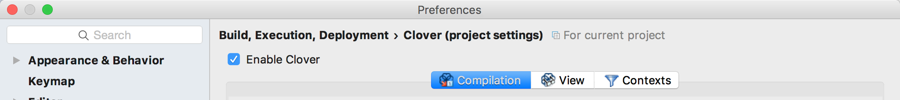
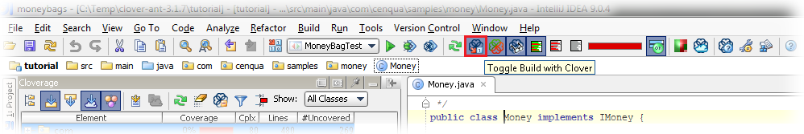
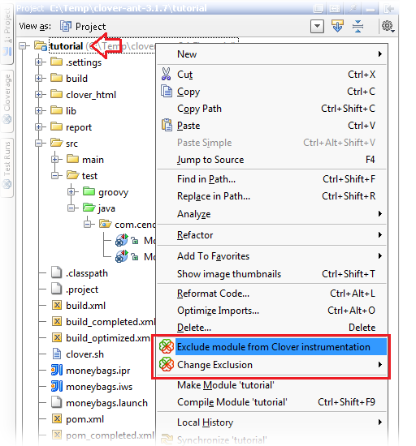
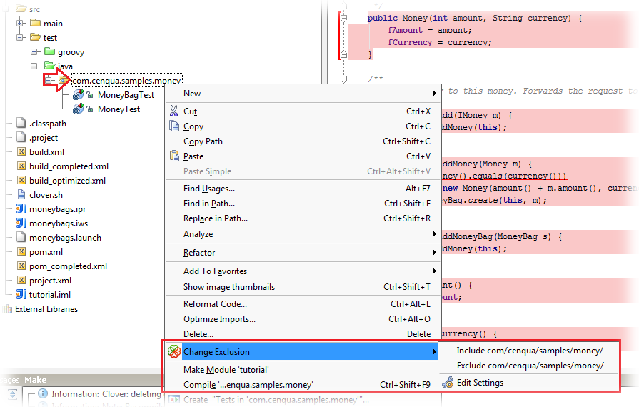
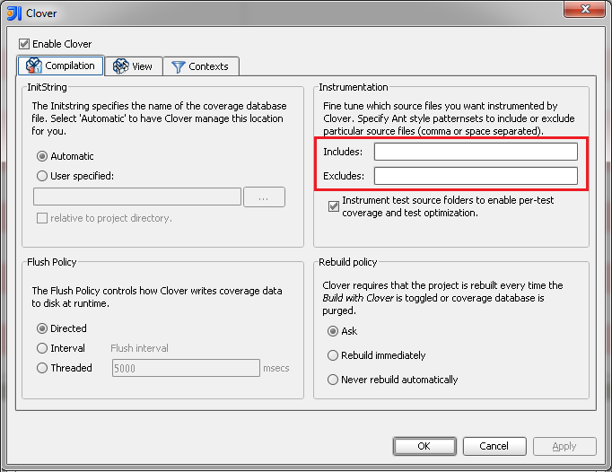
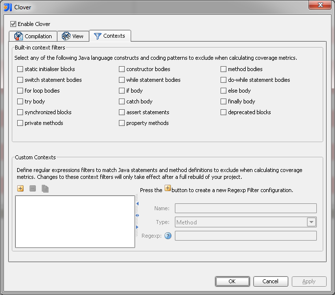
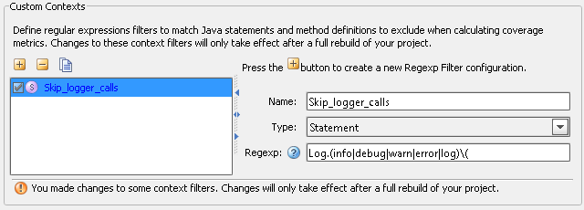
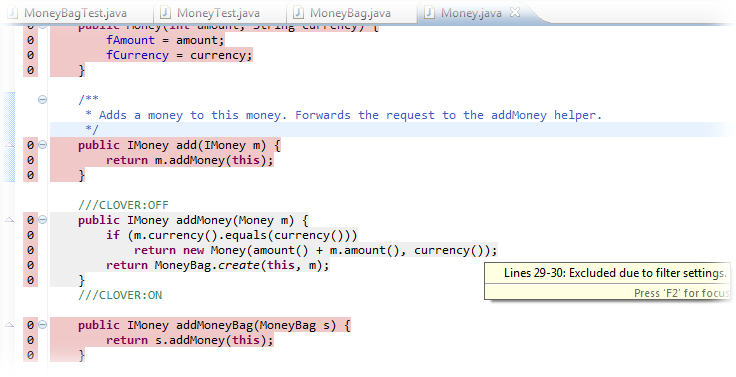
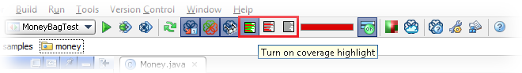

Clover provides many ways to fine-tune instrumentation scope, which gives you an ability to concentrate your work on the most important code.
- Enabling and disabling Clover for a project
- Enabling and disabling build with Clover
- Excluding and including modules
- Excluding and including packages
- Excluding and including files
- Excluding certain blocks of code
- Excluding methods and statements matching regular expression
- Excluding arbitrary lines of code
- Showing Clover coverage annotations in Java source editors
Enabling and disabling Clover for a project
If you want to completely disable Clover support for a project (and remove all Clover data etc), then open the "File > Settings" (Linux, Windows) or "IDEA > Preferences" (OS X) dialog. Next open the "Clover (project settings)" page - you can find it in:
- Build, Execution, Deployment group (IDEA 14 and later) or
- Project Settings group (IDEA 13 and older)
Uncheck the "Enable Clover" checkbox.

Enabling and disabling build with Clover
In order to track the code coverage of your projects, Clover must insert special code into your program at compilation time - called instrumentation - to record this coverage. When Clover is enabled on your project, Clover will automatically perform this task for every file you compile in the project. You can tell Clover not to instrument your project by clicking "Toggle build with Clover" button (on a main bar).

Excluding and including modules
Right click on a module in Project view and select "Exclude module from Clover instrumentation" from context menu.

Excluding and including packages
Right click on a package in Project view, select "Change exclusion" and next one of "Include ..." / "Exclude ..." / "Edit settings ..." from context menu.


Excluding and including files
Right click on a file in Project view, select "Change exclusion" and next one of "Include ..." / "Exclude ..." / "Edit settings ..." from context menu.
Excluding certain blocks of code
Open "File > Settings > Project Settings > Clover" page. Open "Contexts" tab.
In the "Built-in context filters" box you can choose Java language constructs or coding patterns to be excluded. The most interesting are:
- assert statements
- catch body
- finally body
- private methods (all methods having private keyword)
- property methods (all methods having name like getXyz() / setXyz() / isXyz(), being public and having no arguments for isXyz()/getXyz())

Excluding methods and statements matching regular expression
Open "File > Settings > Project Settings > Clover" page. Open "Contexts" tab.
In the "Custom Contexts" box you can define regular expressions for method signatures and statements.

Excluding arbitrary lines of code
Put "///CLOVER:OFF" and "///CLOVER:ON" in source code (note that three slashes are used) to exclude given sections.

Showing Clover coverage annotations in Java source editors
If you wish to temporarily disable the red/green code coverage annotations in your Java source editors (but wish to continue using Clover on your projects), you can simple toggle one of three toggles:
- "Turn on coverage highlight"
- "Turn on coverage highlight for uncovered code only"
- "Turn off coverage highlight"
These buttons are available on main menu bar.

Now you have your project instrumentation tuned to your needs. Are you looking for more tweaks? Read the 5. IDEA configuration options chapter.